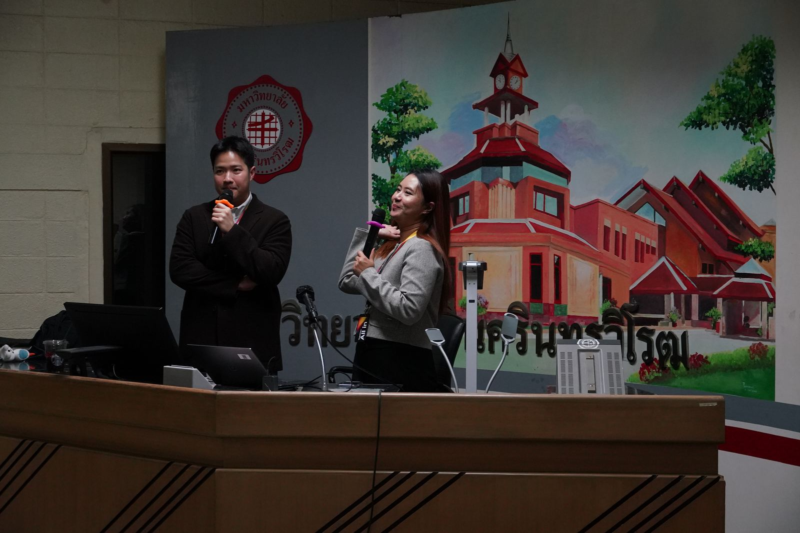

Academics & Research
Quality Assurance
ประกันคุณภาพการศึกษา
ระบบประเมินคุณภาพการศึกษาของคณะ ครอบคลุมตั้งแต่ระดับหลักสูตรจนถึงระดับคณะ
Assessment Frameworks
Three-Level Assessment
เกณฑ์ที่คณะใช้
คณะใช้ระบบประเมินคุณภาพสามระดับควบคู่กัน เพื่อให้ครอบคลุมทั้งมาตรฐานภายในประเทศและมาตรฐานสากล
-
Programme Standards
TQF
Thai Qualifications Framework
Programme Standards
มาตรฐานหลักสูตร
บริหารจัดการหลักสูตรตามเกณฑ์มาตรฐาน ทั้งด้านการออกแบบหลักสูตรและการจัดการเรียนการสอน
-
Faculty Level
EdPEx
Education Criteria for Performance Excellence
Faculty Level
ระดับคณะ
ประเมินตามเกณฑ์คุณภาพการศึกษาเพื่อการดำเนินการที่เป็นเลิศ
รอบ พ.ศ. 2567–2570 -
Programme · International
AUN-QA
ASEAN University Network Quality Assurance
International Programme Level
ระดับหลักสูตร (สากล)
ประเมินหลักสูตรตามมาตรฐานเครือข่ายมหาวิทยาลัยอาเซียน
Reports
Performance Reports & Plans
รายงานผลการดำเนินงานและแผนยุทธศาสตร์
รายงานผลการดำเนินงานตามแผนปฏิบัติการ11 ไฟล์
- ปีงบประมาณ 2568 รอบ 12 เดือน (PDF เปิดในแท็บใหม่)
- ปีงบประมาณ 2568 รอบ 6 เดือน (PDF เปิดในแท็บใหม่)
- ปีงบประมาณ 2567 รอบ 12 เดือน (PDF เปิดในแท็บใหม่)
- ปีงบประมาณ 2567 รอบ 6 เดือน (PDF เปิดในแท็บใหม่)
- ปีงบประมาณ 2566 รอบ 12 เดือน (PDF เปิดในแท็บใหม่)
- ปีงบประมาณ 2566 รอบ 6 เดือน (PDF เปิดในแท็บใหม่)
- ปีงบประมาณ 2565 รอบ 12 เดือน (PDF เปิดในแท็บใหม่)
- ปีงบประมาณ 2565 รอบ 6 เดือน (PDF เปิดในแท็บใหม่)
- ปีงบประมาณ 2564 รอบ 12 เดือน (PDF เปิดในแท็บใหม่)
- ปีงบประมาณ 2562 รอบ 12 เดือน (PDF เปิดในแท็บใหม่)
- ปีงบประมาณ 2562 รอบ 6 เดือน (PDF เปิดในแท็บใหม่)
แผนยุทธศาสตร์ 5 ปี4 ไฟล์
แผนปฏิบัติการประจำปี9 ไฟล์
- ปีงบประมาณ พ.ศ. 2569 (PDF เปิดในแท็บใหม่)
- ปีงบประมาณ พ.ศ. 2568 (PDF เปิดในแท็บใหม่)
- ปีงบประมาณ พ.ศ. 2567 (PDF เปิดในแท็บใหม่)
- ปีงบประมาณ พ.ศ. 2566 (PDF เปิดในแท็บใหม่)
- ปีงบประมาณ พ.ศ. 2566 รอบ 6 เดือน (PDF เปิดในแท็บใหม่)
- ปีงบประมาณ พ.ศ. 2565 (PDF เปิดในแท็บใหม่)
- ปีงบประมาณ พ.ศ. 2564 (PDF เปิดในแท็บใหม่)
- ปีงบประมาณ พ.ศ. 2563 (PDF เปิดในแท็บใหม่)
- ปีงบประมาณ พ.ศ. 2562 (PDF เปิดในแท็บใหม่)
คู่มือการประกันคุณภาพการศึกษา4 ไฟล์
- คู่มือการประกันคุณภาพการศึกษาตามเกณฑ์ AUN-QA Version 4 (PDF เปิดในแท็บใหม่)
- คู่มือวิธีการเข้าใช้งานระบบ CHE QA Online (PDF เปิดในแท็บใหม่)
- คู่มือการประกันคุณภาพการศึกษาตามเกณฑ์ AUN-QA Version 3 (PDF เปิดในแท็บใหม่)
- คู่มือเกณฑ์คุณภาพการศึกษาเพื่อการดำเนินการที่เป็นเลิศ (EdPEx) ฉบับปี 2563 (PDF เปิดในแท็บใหม่)
รายงานการประเมินตนเอง (SAR) ยังไม่ได้เผยแพร่บนเว็บไซต์ — หากต้องการเอกสารฉบับเต็ม ติดต่องานนโยบายและแผน สำนักงานคณบดี
QA Officer · ผู้รับผิดชอบ
นางสาวธัญชนก บุญแปลง
งานนโยบายและแผน · โทรภายใน 11757